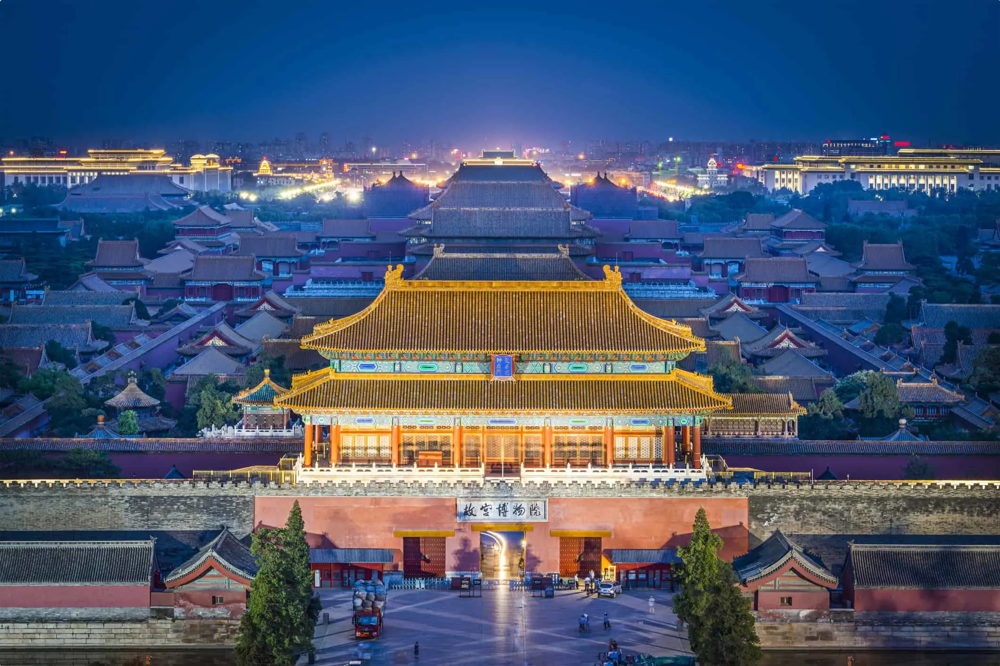
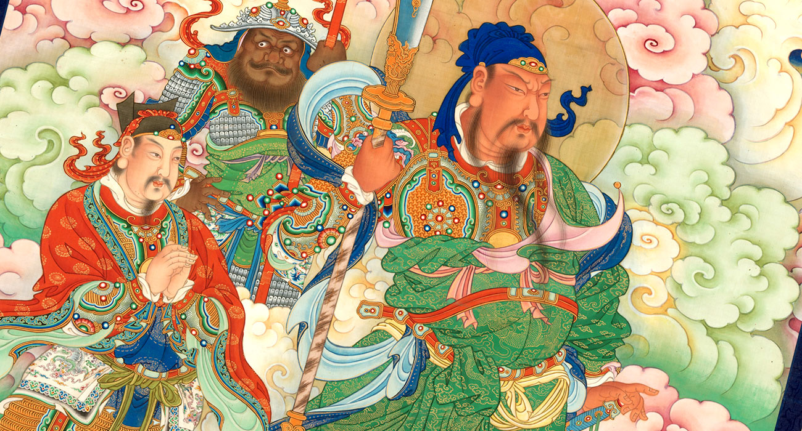
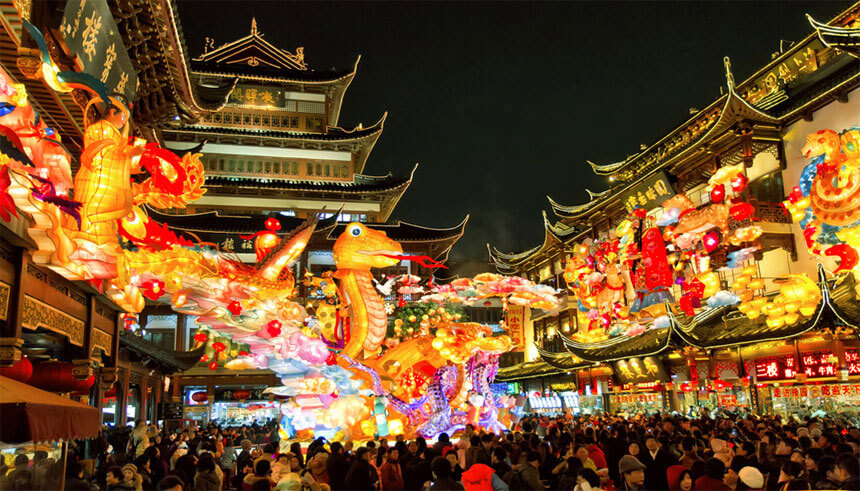
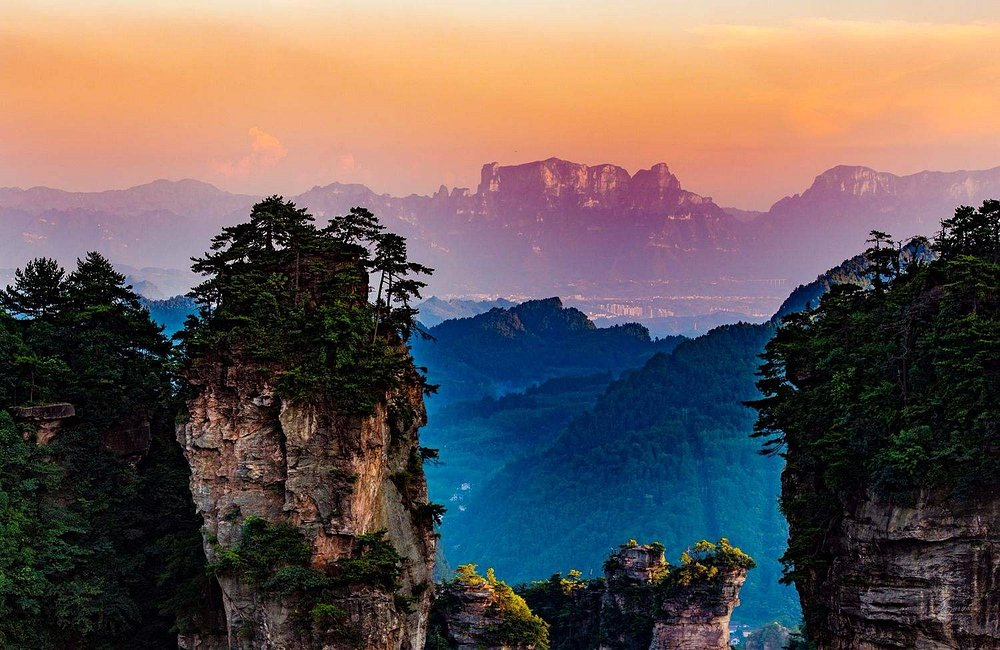
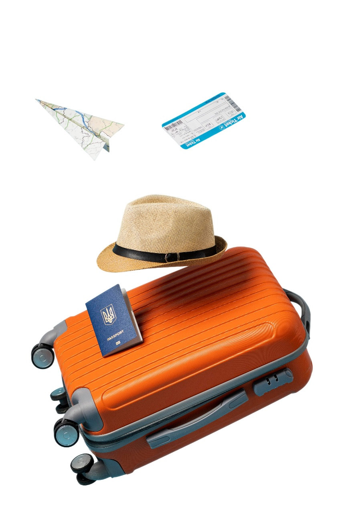
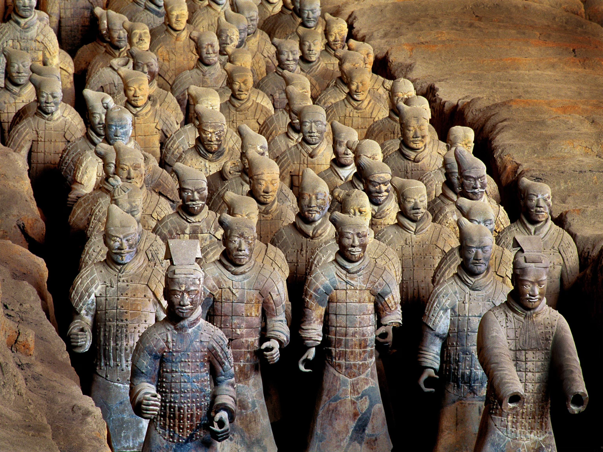

ESTO ES CHINA
La República Popular China, ubicada en Asia oriental a orillas del Pacífico, es el tercer país más extenso del mundo y una de las civilizaciones continuas más antiguas, con más de cinco milenios de historia. Su territorio diverso —desde la meseta del Tíbet y el Himalaya hasta vastas llanuras, ríos emblemáticos como el Changjiang River y extensas costas— refleja una riqueza geográfica y climática excepcional. Cuna de innovaciones trascendentales como el papel, la imprenta, la brújula y la pólvora, China ha ejercido una influencia decisiva en el desarrollo cultural y científico mundial. Hoy combina tradición y modernidad: una nación multicultural compuesta por 56 grupos étnicos, con el mandarín como lengua oficial y una herencia artística que abarca literatura clásica, ópera tradicional, caligrafía, pintura y gastronomía reconocida globalmente. Potencia económica contemporánea y referente tecnológico, China ofrece al visitante una experiencia integral donde patrimonio histórico, dinamismo urbano, paisajes naturales y hospitalidad se integran en un destino de relevancia global.
Destinos
La República Popular China ofrece una organización territorial diversa que refleja su complejidad cultural e histórica. El país se compone de 34 divisiones administrativas de primer nivel: 22 provincias, 4 municipios directamente administrados por el gobierno central —Beijing, Shanghai, Chongqing y Tianjin—, 5 regiones autónomas con mayores facultades legislativas vinculadas a grupos étnicos minoritarios, y 2 Regiones Administrativas Especiales. Con más de 660 ciudades de distintos tamaños y dinámicas económicas, cada destino ofrece una identidad propia en cultura, patrimonio, gastronomía y experiencias, consolidando a China como un país de contrastes y oportunidades para el viajero.
¿POR QUÉ IR?

Historia Milenaria
Más de 5.000 años de civilización reflejados en templos, palacios y tradiciones ancestrales.

Historia Milenaria
Desde la Gran Muralla hasta la Ciudad Prohibida, monumentos reconocidos mundialmente.

Sabiduría Filosófica
Cuna del confucianismo y el taoísmo, donde la armonía y el equilibrio son valores centrales.

Festivales Únicos
Celebraciones como el Año Nuevo Chino llenan ciudades de color, simbolismo y tradición.

Naturaleza y Paisajes
Montañas, parques nacionales y escenarios naturales como el Zhangjiajie National Forest Park ofrecen vistas impresionantes.
El Panda Gigante
El Giant Panda, símbolo nacional de paz y conservación, representa la conexión entre naturaleza y cultura.
LUGARES MÁS VISITADOS


